January 30, 2016
| One warm January weekend, I found
myself with Saturday free so I made a whirlwind 'out and back' trip to
visit my family. We took Brodie to the Gentry Safari because he gets
such a kick out of that place. He runs around that place like he
owns it. Unless an "Amu" (emu) is nearby, that is!
They are scary. |
|
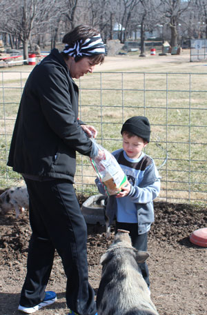 |
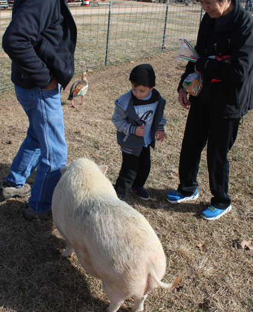 |
| When you bring Brodie, you apparently need to bring two loaves of bread. He really likes to feed the animals. |
This huge pig totally snuck up on him, that was funny! |
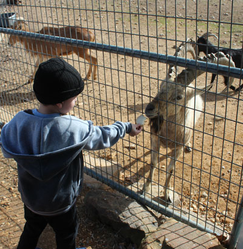 At first he directed MeMaw to feed them, here he is getting brave enough to do it himself. |
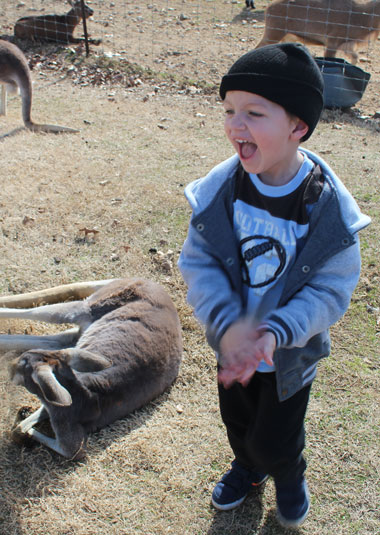 |
| Thrilled with having petted a kangaroo. They are amazingly soft. | |
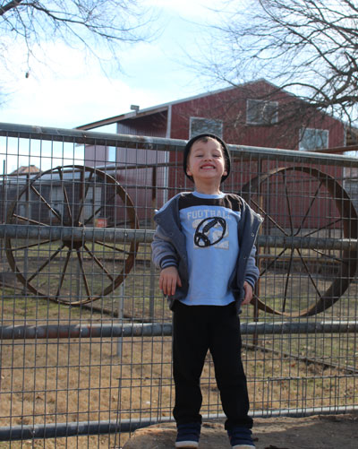 |
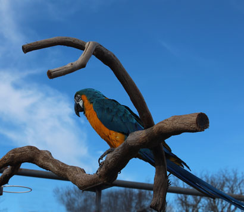 Beautiful parrot |
| Thrilled with life. This is an all-or-nothing kind of kid. | |
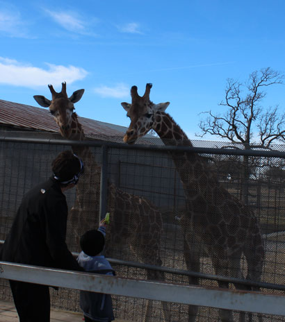 |
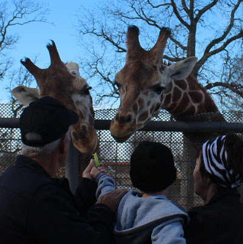 |
| They gave us lettuce to feed to the giraffes. Oops - they can't reach him. | Here PePaw and MeMaw help Brodie out. They lick you
as they take the food, so Brodie didn't enjoy that very much. |
|
|
|
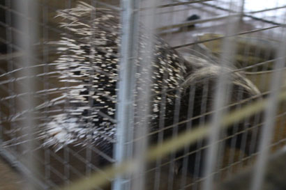 A terrible picture of a cool animal - a porcupine |
|
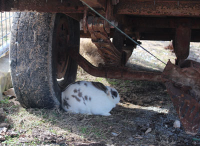 This bunny had escaped his cage, but in a place like this I wonder if that is a good thing for his health and safety. |
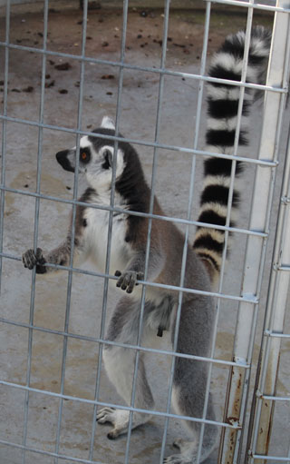 |
| Lemur | |
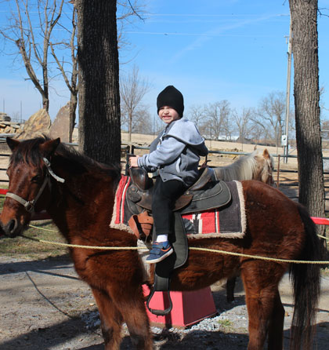 |
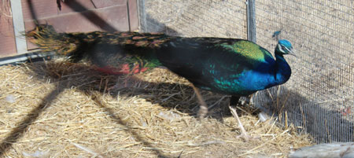 Peacocks are amazing creatures |
| Pony ride | |
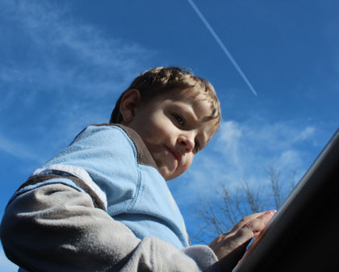 |
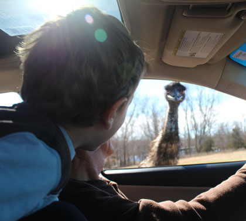 |
| In the drive-through part of the safari they say to keep
the windows rolled up, but they didn't mention the moon roof! |
An emu (or amu, as Brodie says it) checking us out |
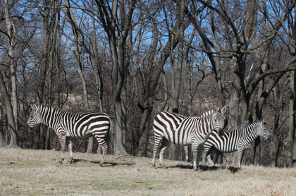 |
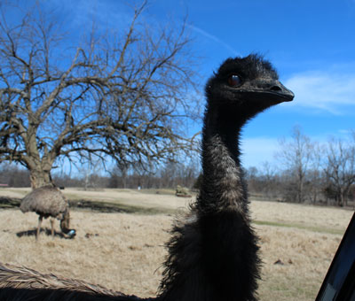 |
| Zebras are so interesting to me, they are really impressive | One of many emus who came up close and personal |
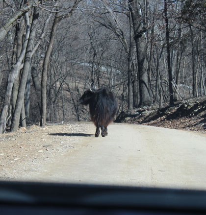 |
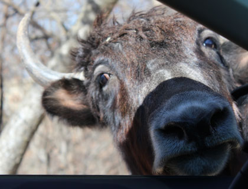 |
| Safari traffic jam | "Pardon me, are those pretzels I smell?" |
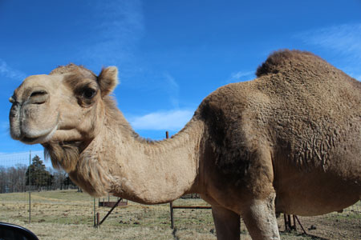 Turns out camels are almost as scary as emus are to Brodie |
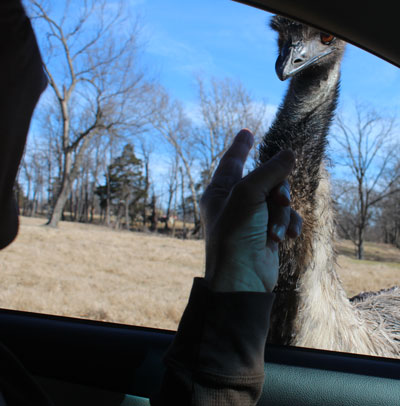 |
| Dad, just before he got his finger pecked | |
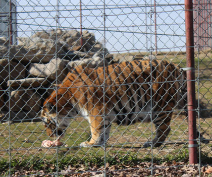 |
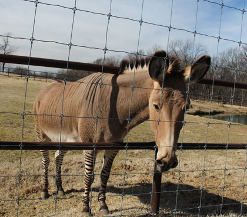 |
| This fat tiger makes me feel a little better about my fat house cats | The product of an unholy union |